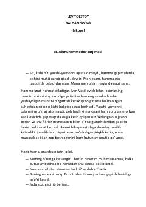

BSYosh yigitning hayotini butunlay o'zgartirib yuborgan kutilmagan voqea haqidagi ta'sirli hikoya.
Lev Tolstoyning ushbu mashhur hikoyasi yosh Ivan Vasilievichning hayotini butunlay o'zgartirib yuborgan bir voqea haqida hikoya qiladi. Asar inson ruhiyati, ijtimoiy muhit va vijdon azobi kabi chuqur axloqiy masalalarni o'rtaga tashlaydi.